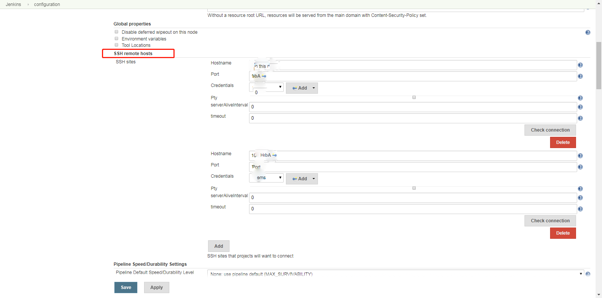

持续集成实践
当前进度
- 未完成触发规则的内容，jenkins设置和gitlab中webhook设置
- 未完成镜像环境变量的传递
- jenkins插件列表需要重新整理
- 未完成Dockerfile的自定义编写以及环境变量的使用
前提
- 尽量进行一步一操作的方式进行编写，截图并进行标注。
- 示例项目为spring-security-react-ant-design-polls-app。将该项目上传到gitlab中，修改数据库连接信息，即可进行搭建。
环境要求
- 采用CentOS 7.6服务器操作系统，要求以Basic Server的方式进行安装。目前服务器地址为：10.0.11.11，ssh端口号为15555 。
- 提前安装好docker以及docker-compose，要求安装的docker-ce版本为19.03.2，要求安装的docker-compose版本为1.24.1。
- Gitlab版本为：12.2.5
- Jenkins的war版本为：2.194
- sonarqube版本为：7.9.1-community
- 镜像仓库–registry版本为：registry-2
- 两个数据库支持，需要MySQL 5.7以及Postgresql 10的支持。
各部分作用
我们在持续集成的过程中选择以下工具，以下是其作用列表：
| 服务名称 | 服务版本 | 作用 |
|---|---|---|
| gitlab | 12.2.5 | 代码托管，git版本控制的远程仓库 |
| Jenkins | 2.194 | 自动构建工具，CI/CD的核心 |
| sonarqube | 7.9.1-community | 代码质量管理 |
| registry | 2 | 镜像托管仓库，所有微服务打包后的镜像及其版本管理 |
安装
下面所有的安装，均基于docker进行安装。
数据库安装
// MySQL数据库的启动 $ docker pull mysql:5.7 $ docker run --name mysql:5.7 --restart always -p 3306:3306 -e MYSQL_ROOT_PASSWORD=123456 \ -v /home/vagrant/mysql5.7/data:/var/lib/mysql -d mysql:5.7 // PostgreSQL启动 $ docker pull postgres:10 $ docker run --restart=always --name postgres -e POSTGRES_USER=sonar \ -e POSTGRES_PASSWORD=sonar -d postgres:10Gitlab安装
// 1. 拉取gitlab的镜像 $ docker pull gitlab/gitlab-ce:latest // 2. 启动gitlab $ docker run -d \ --restart=always \ --hostname ${HOST_NAME} \ -p 8443:443 -p 8181:80 -p 15555:22 \ --name gitlab \ -v ${GITLAB_DIR}/config:/etc/gitlab \ -v ${GITLAB_DIR}/logs:/var/log/gitlab \ -v ${GITLAB_DIR}/data:/var/opt/gitlab \ gitlab/gitlab-ce:latestjenkins安装
// 预先安装好maven，并指定maven路径为/home/centos/maven/apache-maven-3.6.2 // 拉取docker镜像 $ docker pull jenkinsci/blueocean // 运行docker镜像 $ docker run --restart=always --name jenkins --user=root -d -p 0.0.0.0:8282:8080 \ -p 50000:50000 \ -v /etc/localtime:/etc/localtime:ro \ -v /root/data/maven:/home/centos/maven/apache-maven-3.6.2 \ -v jenkins-data:/var/jenkins_home \ -v /var/run/docker.sock:/var/run/docker.sock \ jenkinsci/blueoceansonarqube安装
// 拉取docker镜像 $ docker pull sonarqube:7.9.1-community // 运行sonarqube镜像 $ docker run --name sonarqube --link postgres -e SONARQUBE_JDBC_URL=jdbc:postgresql://postgres:5432/sonar -p 9000:9000 -d sonarqube:7.9.1-communitydocker镜像仓库–registry安装
// 拉取docker镜像 $ docker pull registry:2 // 运行registry镜像 $ docker run --name registry --link postgres -e SONARQUBE_JDBC_URL=jdbc:postgresql://postgres:5432/sonar -p 9000:9000 -d registry:2开放对外的端口
通过操作firewall-cmd来开放对应的端口，操作请查看Linux日常运维操作。
配置
- docker配置
我们的目标是，将所有的服务通过docker镜像的方式提供对外服务。因此需要提供对docker镜像进行管理的仓库。这里启动镜像仓库后，需要对本机的docker进行设置，指定其需要的连接的镜像仓库。其次要允许该服务器的docker开启远程访问，以便于拉取docker镜像。
- docker开启远程访问
通过ssh登录服务器，进行以下操作：
$ sudo vim /usr/lib/systemd/system/docker.service
// 修改ExecStart所在行，添加 -H tcp://0.0.0.0:2375 内容
ExecStart=/usr/bin/dockerd -H tcp://0.0.0.0:2375 -H fd:// --containerd=/run/containerd/containerd.sock
// :wq 将文档进行保存
// 重新加载docker配置
// 1，加载docker守护线程
$ sudo systemctl daemon-reload
// 2，重启docker
$ sudo systemctl restart docker这样docker服务就可以进行远程访问了。可以参考该文章进行更改。
由于我们在之前的镜像启动时，均添加了–restart=always配置项，所以在重启docker服务的时候，所有正在运行的docker镜像均可以自动拉起。
- docker配置远程仓库
由于这里没有配置ssh秘钥，存在一定的风险，使用时请屏蔽该服务的外部访问请求。如果不配置ssh密钥登录，将会出现以下错误：
Error response from daemon: Get https://10.0.11.11:5000/v2/: http: server gave HTTP response to HTTPS client配置如下：
$ sudo vim /etc/docker/daemon.json
// 在文档中输入以下信息
{
"insecure-registries": ["10.0.11.11:5000"]
}
// :wq进行保存
// 重启docker服务
$ sudo systemctl restart docker带ssh密钥版本可参考该文章配置。如果是外网访问的话，建议使用域名并配合HTTPS证书进行配置。
这样针对docker服务的配置就到此为止了。
- gitlab基础配置
当gitlab启动后，访问http://10.0.11.11:8181即可进入。
设置管理员密码

设置后管理员密码后，就进入登录页面，输入用户名 root 和刚才设置的密码就进入了 gitlab 的控制台。如下图所示:

- 创建组
gitlab 里面有三类对象：组（ group）、项目（ project）和用户 （people）。
为了方便管理，我们应该基于组来创建项目。一个项目就是一个 git 的仓库。基于组创建项目 ，然后将用户设置合适的权限后加入到组里面。这样用户就有了组里面所有项目的对应权限。
点击 “Create a group” 链接，如下图所示创建一个“健康医疗开发组” 的组

- 创建用户
点击 “Add people” 链接，如下图所示创建一个 “yanggch” 的用户。如下图：

因为还没有配置好邮件服务，所以还不能发送用户初始化密码的邮件。我们需要编辑用户，手动设置一个密码。如下图所示。如果用户忘记了密码，充值密码也可以在这里进行。

- 将用户加入组
为了方便管理，需要将用户加入到对应的组里面。如下图所示，在组管理界面中，点击组的名称，进入组用户设置界面。将刚才创建的用户 “yanggch” 加入到组 “健康医疗开发组”中，并且给他设置为 “Master” 角色。只有 “Master” 或者 “Owner” 角色才能推送 git 的更新。

- 创建项目
增加 gitlab 组的时候，为了让项目让组里面的人都能访问，注意要将项目建立在组之下。如下图所示，在“健康医疗开发组”之下建立了 “redis_util” 的项目。

- ssh密钥配置
针对该项目需要配置jenkins拉取的ssh密钥，以方便后续从jenkins中拉取该项目。首先配置本机的ssh访问，开启命令行，进行操作：
// 转换到ssh目录下,进入 ssh key 存储目录
cd ~/.ssh
// 执行下面的命令生成ssh 访问的密钥信息
ssh-keygen -t rsa
// 全部回车后，会生成id_rsa.pub公钥文件这时候需要将公钥文件id_rsa.pub内的信息拷贝到gitlab中，以文本方式打开，添加到。这样我们需要登录至gitlab，点击用户信息中的settings选项，如下图：

进入个人配置中心后，选择SSH Keys，填入密钥信息，如下图：

完成后即可进行保存，点击Add key，保存该密钥。
然后配置docker的ssh访问，登录目标服务器，进入docker镜像中，操作如下：
// 进入docker镜像
$ docker exec -it b979 /bin/bash
// 生成ssh密钥
$ ssh-keygen
// 全部回车
// 查看ssh公钥信息
$ cat ~/.ssh/id_rsa.pub这时拷贝输出的信息，添加到gitlab的配置中即可，操作可参考上面的步骤。
- 创建我们自己的项目
将我们的测试项目拉取到本地
// 先将目标项目拉取到本地
git clone https://github.com/callicoder/spring-security-react-ant-design-polls-app.git
// 然后更改项目中polling-app-server/src/main/resources/目录下的application.properties文件，修改数据库连接地址，更改为自己的即可
// 提交修改
git commit -am "修改数据库连接信息"然后在gitlab中我们创建的Group下，创建项目Test_CI-CD，并赋予权限。项目地址为：http://10.0.11.11:8181/lisongyang/test_ci-cd.git
最终我们把我们创建的Test_CI-CD拉取到本地，将原来的spring-security-react-ant-design-polls-app中的文件覆盖到Test_CI-CD中，进行提交即可，最终效果如下：

- sonar基础配置
sonar启动后，访问http://http://10.0.11.11:9000/，进入sonarqube的管理页面，用户名和密码均为admin。
- 访问token设置
登录后点击右上角加号右侧的用户信息，在弹出框中点击My Account选项，进入管理页面如下：

点击Security选项，看到有个Generate Tokens的输入框。如下图：
在输入框中输入test，点击Generate按钮，生成一个全局访问的token信息，如下图：
先记录下这个token信息，为：b3cd96221a2f1723123dbca4a5bdd34eb5a3e339。后续会用到。
- 新建项目
点击右上角的加号，弹出Create new project选项，创建一个新项目。如下图：
输入Project key和Display name的信息，到下一个创建页面，如下图：

在创建的时候，我们在第一个Provide a token输入框中，需要选择Use existing token，将刚才生成的token信息输入，如下图：

点击continue，就会出现如何去运行该项目，以达到将代码分析数据传入到sonar平台的效果。如下图：

选择Java和Maven选项，就出现了下面通过maven执行代码测试的命令。这样我们就可以将该命令应用在jenkins中。
- 构建脚本
针对构建脚本需要做部分优化，需要添加两个新的选项才行，要指定sources和java.binaries的目录地址，如下图：
mvn sonar:sonar \
-Dsonar.projectKey=Test-CI-CD \
-Dsonar.host.url=http://10.0.11.11:9000 \
-Dsonar.login=jenkins \
-Dsonar.login=d3830ce5b21ca809290798ed7f093dd3f4396edf \
-Dsonar.java.binaries=./polling-app-server/target/ 一定要指定sonar.java.binaries属性信息，否则jenkins构建时会报错。在构建自己的项目时，需要调整为自己项目对应的目录结构信息。
- jenkins基础配置
初始配置
初始的配置步骤
当docker启动jenkins后，通过访问http://10.0.11.11:9090/，进入jenkins的初始化设置。首先需要对jenkins进行解锁，如下图所示：

需要回到服务器中，进入jenkins正在运行的docker镜像中。操作如下：
// 进入jenkins所在镜像
$ docker exec -it b979 /bin/bash// 查看初始化的密码信息
bash4.4# cat /var/jenkins_home/secrets/initialAdminPassword将输出的信息复制，粘贴到输入框中，再点击右下角的”Continue”按钮。
解锁后，进入Customize Jenkins页面，如下图：

如果是离线模式安装，Jenkins会提醒“This Jenkins instance appears to be offline”。我们先点击“Skip Plugin Installations”跳过插件安装。
如果是在线模式安装的话，可以选择跳过该部分，后续根据需要安装插件。也可以选择Install suggested plugins进行安装。但是插件安装过程很慢，需要很长时间，且存在安装不成功的情况。如下图：

下一步开始设置管理员信息，如下图：

填写管理员信息后，点击右下角Save and Finish按钮，即可进入jenkins主界面，如下图：

jenkins安装插件
进入jenkins主页面，点击左侧Manage Jenkins，再转到Manage Plugins界面，操作如下图：

最终转到插件安装界面如下：
点击切换到Available页面下，选择插件安装，可以在右上角输入框中输入插件名称进行查找。插件列表如下：
maven相关
- maven integration plugin – maven构建
- Pipeline Maven Integration Plugin
sonar相关
- Sonar Quality Gates Plugin
触发构建相关
- Generic Webhook Trigger
pipeline相关
gitlab相关
- Git plugin
- Git client plugin
- Gitlab Plugin – 从Gitlab拉取
docker相关
- Docker Compose Build Step Plugin
- Docker Pipeline
- Docker plugin
- docker-build-step – docker分步执行命令
ssh执行相关
- Publish Over SSH – 通过ssh执行远程命令
- SSH plugin
- SSH Slaves plugin
- SSH Agent Plugin
nodejs相关
- NodeJS Plugin
- nvm-wrapper – 利用该插件管理和安装nodejs版本
邮件相关
- Email Extension
- Email Extension Template
企业微信通知
- Qy Wechat Notification Plugin
其它
- Workspace Cleanup Plugin – 清理工作空间
- Webhook Step Plugin – 执行设置webhook，方便构建
- Localization:Chinese (Simplified) – 设置中语言包插件
- Timestamper – 设置构建后显示时间进度的问题
安装插件时，可能需要多次重启jenkins服务。这里不需要重启jenkins镜像，当一批插件安装完成时，可以选择自动重启，也可以选择安装完成所有的插件再重启。插件安装图示如下：

jenkins安装工具后的配置
首先开启Configure System的配置，也就是系统全局配置，方式如下图：

然后设置以下的两个选项：
ssh远程连接服务器设置
找到SSH remote hosts部分，如下图：
点击最下面的Add按钮，添加一个服务器配置，填入以下信息。如下图：

在Credentials选项中，点击后边的add选项，添加秘钥信息，如下图：

填写username为centos，Password为123456，ID为centos登录，点击add即可添加远程连接的密钥。如下图：

点击选择密钥后，即可进行连接测试，点击Check Connection，测试服务器的连接信息，如下图：

最后点击页面最下方的灰色Apply按钮，即可保存成功，留在该页面继续进行配置。如果点击蓝色Save按钮，同样可以保存成功，但是会退出该页面，回到Dashboard首页。
docker远程仓库配置
同样在改配置页面上，找到Docker Builder模块，配置Docker URL信息，填入前面配置的docker中的tcp连接信息，如下图：

点击TestConnection，测试远程仓库的连接信息。若成功则点击Apply按钮进行保存。
这部分完成了以后，需要转到Global Tool Configuration选项中，跳转方式如下：

然后设置以下的两个选项：
jdk配置–镜像内配置和安装配置
找到JDK模块，点击JDK installations按钮，展开添加jdk的信息，首先添加本地docker镜像内的jdk信息，输入如下图：
maven配置
找到Maven模块，点击Maven installations按钮，展开添加Maven的信息，点击Add Maven添加，如下图：
填写Maven的名称，勾选Install automatically，在下面选择Install from Apache中的Version选项，选择3.6.3版本。点击最下面的Apply即可。
nodejs配置信息
由于使用nvm管理nodejs的安装，因此对其不进行配置，在前端项目构建的时候体现。sonar服务
由于我们使用maven执行sonarqube相关的命令，所以在此可以不设置sonarqube服务的内容。sonarqube scanner
由于我们使用maven执行sonarqube相关的命令，所以在此可以不设置sonarqube scanner的内容。
jenkins授权配置–密钥管理
密钥添加的界面可以查看ssh远程连接服务器设置界面的设置，添加密钥信息。添加密钥时主要有以下类型，如下图：

常用的除了Username with password，还有Secret text。如果需要使用HTTPS的话，需要添加证书信息。
jenkins管理配置文件
在项目中，使用了nexus作为maven的管理仓库，所以需要设置到私服的连接上。因此需要对maven的配置文件进行调整。转到Manage Jenkins页面，点击Manage files，如下图：


然后可以点击Add a new Config，新增一个Maven的settings.xml，勾选Maven settings.xml，点击Submit即可添加。如下图：

添加后，即可进行编辑，如下图：

需要按照当前平台的配置文件进行设定，将提供的配置文件内容复制到输入框中，编辑后点击Submit进行保存。
搭建全流程
jenkins创建jobs
现在开始构建Test_CI-CD项目，由于这是个前后端分离的项目，需要分别从前端和后端构建。文件夹polling-app-client内为前端项目，文件夹polling-app-server内为后端项目，需要注意路径的问题。
后端构建案例
创建新的job
创建新的job，点击左上角的New Item选项，进入创建页面：


在Enter an item name中输入名称信息，点击选择下面的Maven project项目，点击OK即可创建项目，如下图：

也可以从之前的项目进行复制，不要点选Maven project，直接在最下面的Copy from中输入要复制的项目，点击选择自动提示的项目名称，就会自动将已有项目的配置信息添加到新项目中了，点击OK即可创建之前已有项目的副本。如下图：

构建之前的设置
通用配置设置–指定JDK信息
在后端项目构建时，需要添加之前我们设定的jdk信息，转到General模块。如下图：
需要勾选Execute concurrent builds if necessary，然后在弹出的JDK一栏选择我们添加的JDK名称，这里选择jenkins的docker镜像中的JDK。默认指定的是(System)中的JDK信息。
其它的可以填写Description内容。点击Apply进行保存，然后继续设置。
拉取项目代码
转到Source Code Mangement模块，添加项目的gitlab地址信息。首先勾选Git，弹出Git的配置信息，开始填写Repository URL，如下图：
填写Repository URL，选择之前添加的Credentials认证信息。如果认证信息未添加，可以点击下拉框右边的Add按钮添加。如下图：

然后输入Branches to build中的要构建的分支信息，这里以Develop分支为例，如下图：

点击Apply进行保存，然后继续设置。
构建触发策略
转到Build Triggers模块，这里我们有多种构建方式可选，例如Build periodically（定时策略构建）、Build when a change is pushed to GitLab. （有push操作就构建）、Trigger builds remotely（远程连接触发构建）、Gitlab Merge Requests Builder（merge操作后构建）等等。这里先介绍最简单的定时任务构建。
现在我们选择定时任务构建，选择Build periodically，展示出Schedule输入框，如下图：
输入以下信息：H H/8 * * *表示每隔8小时构建一次，这里定时任务的编写可以参考该文章进行。 点击Apply进行保存，然后继续设置。
构建环境
转到Build Environment模块，后端构建的时候对其不做设置，前端构建时对其设置。前置步骤
转到Pre Steps模块。在构建之前，我们需要将代码提交到sonarqube进行代码审查，这里使用maven的命令方式进行提交。选择Add pre-build step项，如下图：
点击选择Execute shell，会添加Execute shell的输入信息。在Command的输入框中填写以下信息：
cd ./polling-app-server && mvn sonar:sonar \ -Dsonar.projectKey=Test-CI-CD \ -Dsonar.host.url=http://10.0.11.11:9000 \ -Dsonar.login=jenkins \ -Dsonar.login=d3830ce5b21ca809290798ed7f093dd3f4396edf \ -Dsonar.java.binaries=$WORKSPACE/polling-app-server/target/需要切换到后端代码的文件夹中，执行maven的sonar扫描操作。将代码推送到sonarqube中，进行代码自动化审查，出具相应的代码审查结果。当项目开始自动化构建时，将会先执行前置步骤的操作。代码审查结果如下图：

针对jenkins中的设置，点击Apply进行保存，然后继续设置。
构建
转到Build模块，选择使用maven构建需要确定pom文件地址和maven执行的命令信息。首先在Root POM输入框中填入pom.xml文件所在地址，然后在Goals and options输入框中填入要执行的命令，如下图：
随后点击Advanced…选项，展开的内容拉到最后，有个Maven Validation Level的标签，在它下面的Settings file中，下拉选择Provided settings.xml，在随后弹出的Provided Settings 下拉框中选择Settings文件信息，添加maven的配置文件。如下图：

这样就设置完成了Maven的配置文件。点击Apply进行保存，然后继续设置。
构建后处理步骤
转到Post Steps模块，点选Run only if build succeeds，选择只有在构建成功后执行下面的操作。点击Add post-build step，选择Execute Docker command，添加docker的操作步骤。如下图：
然后进行下面的操作，首先我们要对已经构建过产出的jar包构建docker镜像。在新增的Execute Docker command中，在Docker command部分，下拉选择Create/build image选项，如下图：

然后天禧Build context folder，指定Dockerfile路径，对要产出的镜像信息指定tag，如下图：

随后新增Execute Docker command，在Docker command部分，下拉选择Push image，然后填写要推送到镜像仓库的镜像名称。选择Docker registry URL，输入框中填写镜像地址即可，如下图：

当镜像已经push到镜像仓库时，需要删除当前服务器上已经构建的镜像，因此需要添加新的Execute Docker command，从Docker command中选择Remove image选项，填入要删除的镜像名称，如下图：

这样针对Docker的操作就完成了，点击最下面的Apply按钮，即可进行保存。
最后我们需要将docker镜像指定在目标服务器上执行，点击Add post-build step按钮，选择Execute shell script on remote host using ssh，如下图：

在SSH site部分选择前面设置的服务器ssh连接信息，在Command输入以下命令：
#-------------------------------------------------------------------------- # 判断是否存在镜像 docker ps -a | grep -w polling-app-server &> /dev/null # 如果存在先停止运行并删除镜像 if [$? -eq 0] then echo "polling-app-server is exsited!!" docker stop `docker ps -a | grep -w polling-app-server | awk '{print $1}'` docker rm `docker ps -a | grep -w polling-app-server | awk '{print $1}'` fi echo "pull the polling-app-server image" docker pull 10.0.11.11:5000/polling-app-server:$BUILD_NUMBER docker run -d -p 19900:80 10.0.11.11:5000/polling-app-server:$BUILD_NUMBER表示在远程服务器上，执行下面的脚本信息。将已有的服务进行停机，随后用新的docker镜像替代原来运行的docker镜像，达到自动部署的效果。点击最下面的Apply按钮，即可进行保存。
构建后行为
前面所有的构建步骤完成后，转到最后一步Post-build Actions中。点击Add post-build action，然后选择企业微信通知，即可创建针对企业微信的通知内容。
需要在企业微信中创建机器人，首先创建群聊，完成后右击群聊框，弹出创建群机器人的选项，按照图示操作，如下图：


添加完成后需要复制Webhook地址信息，如下：
https://qyapi.weixin.qq.com/cgi-bin/webhook/send?key=293181db-f077-427f-879e-332e883a6198这时，回到jenkins中，在添加的企业微信通知模块中，填写Webhook地址，将上面的地址信息复制粘贴到该位置，这样就能够监控构建时的构建状态。点击最下面的Apply按钮，即可进行保存。
由此所有的都已经配置完毕，下面开始后端项目构建！
点击Save保存所有的内容，回到项目页面，如下图：
点击右边的Build Now，即可手动触发构建。或者等待定时任务在特定的时间节点进行构建。点击后将会在左下方的Build History中生成一条构建信息，如下图：

随后点击序号，进入该构建内，如下图：

可以点击Console Output，查看构建日志，如下图：

最后在构建开始时，会在企业微信进行通知，在构建完成后，也会在企业微信进行通知。构建出错时，也会在企业微信进行通知，如下图：

这样我们就完成了后端构建的内容。
前端构建案例
创建前端项目
下面我们需要先创建一个前端项目，点击New Item，填写item name信息，选择Freestyle project，点击OK开始进行配置。如下图：

通用设置
转到General模块，在构建前端项目的时候，不需要设置JDK的相关信息，在通用设置中可以保持默认设置。
代码管理
转到Source Code Management模块，点击选择Git，弹出Git的弹出框。由于这里前端和后端项目均在同一个仓库中，因此填写内容和上面后端构建时相同，不再赘述，如下图：

构建触发内容
转到Build Triggers模块，设置同上面后端的设置相同，使用定时构建的方式进行构建。如下图：

构建环境设置
在构建环境设置，需要指定nodejs的版本，这里利用之前安装的nvm-wrapper插件进行管理nodejs版本。点击勾选Run the build in an NVM managed environment，弹出下面的内容，如下图：

然后填写nodejs版本，指定NVM Install URL、NVM_DIR installation dir。设置NVM安装路径的时候，一定保证文件夹路径存在，并且具备相应的权限信息。填写完成后，如下表：

这样设置完成，在构建的前置，检测nvm是否安装、nodejs是否安装，如果未安装会优先安装该程序。点击最下面的Apply按钮，即可进行保存。
构建部分
转到Build模块。这里针对前端构建，通过对前端的React代码（Vue操作类同）进行打包，生成docker镜像，放到服务器上对外提供前端访问。首先要进行前端代码的打包，点击Add build step，选择Execute shell，添加代码执行的窗口，插入以下代码：
cd ./polling-app-client npm --registry https://registry.npm.taobao.org install -g yarn // 指定使用淘宝的npm镜像 yarn --registry https://registry.npm.taobao.org install yarn run build插入完成后，如下图：

然后进行docker镜像的构建、推送仓库、删除镜像、目标服务器执行镜像，操作类同后端构建的操作，最终结果如下：

这样关于构建的设置已经完成了。点击最下面的Apply按钮，即可进行保存。
构建之后
转到Post-build Actions，创建企业微信的通知操作，同后端构建的配置信息，不再赘述。
上述构建配置完成后，点击Save存储，转到项目构建页面。
点击Build Now，开始即时构建。其它查看信息同后端构建项目相同。
最终测试
对于开发侧的影响
Dockerfile编写
编写后端Dockerfile
示例项目中已经编写了Dockerfile，见项目中的Dockerfile文件，内容如下：#### Stage 1: Build the application FROM openjdk:8-jdk-alpine as build # Set the current working directory inside the image WORKDIR /app # Copy maven executable to the image COPY mvnw . COPY .mvn .mvn # Copy the pom.xml file COPY pom.xml . # Build all the dependencies in preparation to go offline. # This is a separate step so the dependencies will be cached unless # the pom.xml file has changed. RUN ./mvnw dependency:go-offline -B # Copy the project source COPY src src # Package the application RUN ./mvnw package -DskipTests RUN mkdir -p target/dependency && (cd target/dependency; jar -xf ../*.jar) #### Stage 2: A minimal docker image with command to run the app FROM openjdk:8-jre-alpine ARG DEPENDENCY=/app/target/dependency # Copy project dependencies from the build stage COPY --from=build ${DEPENDENCY}/BOOT-INF/lib /app/lib COPY --from=build ${DEPENDENCY}/META-INF /app/META-INF COPY --from=build ${DEPENDENCY}/BOOT-INF/classes /app ENTRYPOINT ["java","-cp","app:app/lib/*","com.example.polls.PollsApplication"]但是针对自己的服务，只需要构建运行时状态，不需要构建mvn的设置。通用的简化版的Dockerfile的配置如下（以注册中心为例）：
# FROM XX---指定基础镜像 FROM openjdk:8-jre-alpine # WORKDIR 设置当前工作目录 WORKDIR /app # 复制jar包所在地址 到 目标地址 --将jar包拷贝到镜像系统的相应地址 COPY ./target/test-serverregister-0.0.1-SNAPSHOT.jar /app # 设置运行的加入点 ENTRYPOINT ["java","-Dspring.profiles.active=peer0","-jar","test-serverregister-0.0.1-SNAPSHOT.jar"]编写前端Dockerfile
示例项目中前端已经编写了Dockerfile，见项目中的Dockerfile文件，内容如下：#### Stage 1: Build the react application FROM node:12.4.0-alpine as build # Configure the main working directory inside the docker image. # This is the base directory used in any further RUN, COPY, and ENTRYPOINT # commands. WORKDIR /app # Copy the package.json as well as the package-lock.json and install # the dependencies. This is a separate step so the dependencies # will be cached unless changes to one of those two files # are made. COPY package.json package-lock.json ./ RUN npm install # Copy the main application COPY . ./ # Arguments ARG REACT_APP_API_BASE_URL ENV REACT_APP_API_BASE_URL=${REACT_APP_API_BASE_URL} # Build the application RUN npm run build #### Stage 2: Serve the React application from Nginx FROM nginx:1.17.0-alpine # Copy the react build from Stage 1 COPY --from=build /app/build /var/www # Copy our custom nginx config COPY nginx.conf /etc/nginx/nginx.conf # Expose port 3000 to the Docker host, so we can access it # from the outside. EXPOSE 80 ENTRYPOINT ["nginx","-g","daemon off;"]但是针对自己的服务，只需要构建运行时状态，不需要构建mvn的设置。通用的简化版的Dockerfile的配置如下：
#### Serve the Vue application from Nginx FROM nginx:1.17.0-alpine # Copy the react dist from Stage 1 COPY dist/ /var/www # Copy our custom nginx config COPY nginx/ /etc/nginx/ # Expose port 3000 to the Docker host, so we can access it # from the outside. EXPOSE 80 ENTRYPOINT ["nginx","-g","daemon off;"]
* 配置信息动态化--nacos配置中心配合修改基础配置jenkins执行jobs
触发策略
- 定时触发
- 提交触发
- URL触发
日志输出和查看
pipeline构建与传统的流程构建
后续规划
- 各微服务部署方式和部署体系
- k8s体系–服务编排与治理
注意事项
服务器上的docker设置，问题：
Error response from daemon: Get https://10.0.11.11:5000/v2/: http: server gave HTTP response to HTTPS client需要添加insecure-registry设定，添加完成后需要重启docker服务。详情需要见：2. docker配置远程仓库
关于jenkins的备份策略
thinBackup的使用。
玄学问题：jenkins重启后jobs丢失
Dockerfile的编写
jenkins中的各配置项含义解析
获取jenkins镜像的root权限
执行命令：
docker exec -u 0 -it cbbc bash即可以root用户登录docker镜像。
镜像时钟同步问题
// 先以root用户登录到docker镜像中 $ docker exec -u 0 -it cbbc bash // 然后添加链接信息 bash-4.2# ln -sf /usr/share/zoneinfo/Asia/Shanghai /etc/localtime // 查看日期信息 bash-4.2# date 2017年 09月 20日 星期三 20:54:35 CST // 输出日期正常gitlab的备份和恢复
docker镜像构建原则
- 减少镜像层数，尽量把一些功能上面的统一命令合并到一起去执行
- 注意清理镜像构建的中间产物，比如一些安装包安装完成后及时清理
- 注意优化网络请求，用一些网络比较好的开源镜像站点，在构建过程中节约时间，减少失败率
- 尽量去使用构建缓存，尽量把一些不变的层级或者变更较少的层级放在前面，因为不变的东西是可以进行缓存的
- 多阶段进行镜像构建，将我们镜像制作的目的做一个明确，把我们的构建和真正的一些产物做分离，构建就用构建的镜像去做，最终产物就打最终产物的镜像